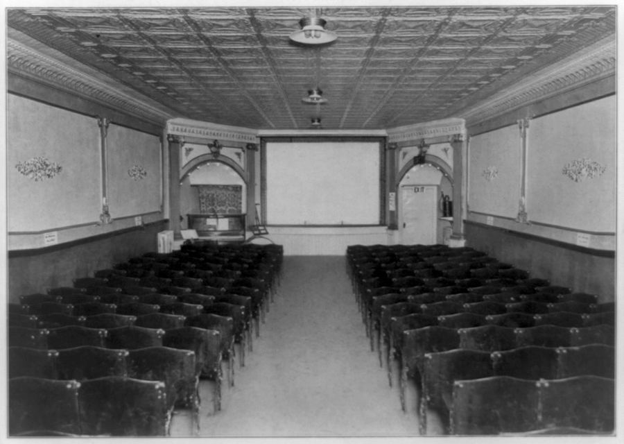
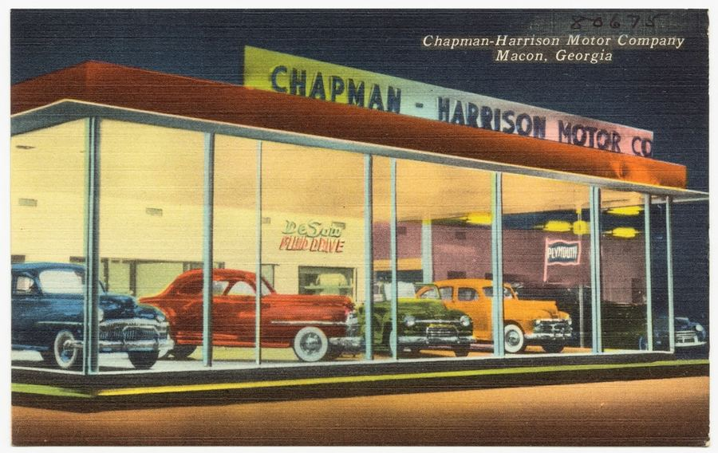
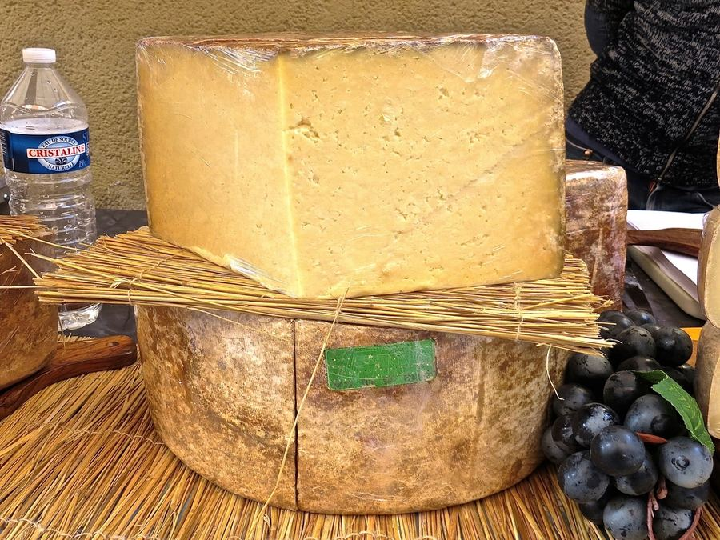
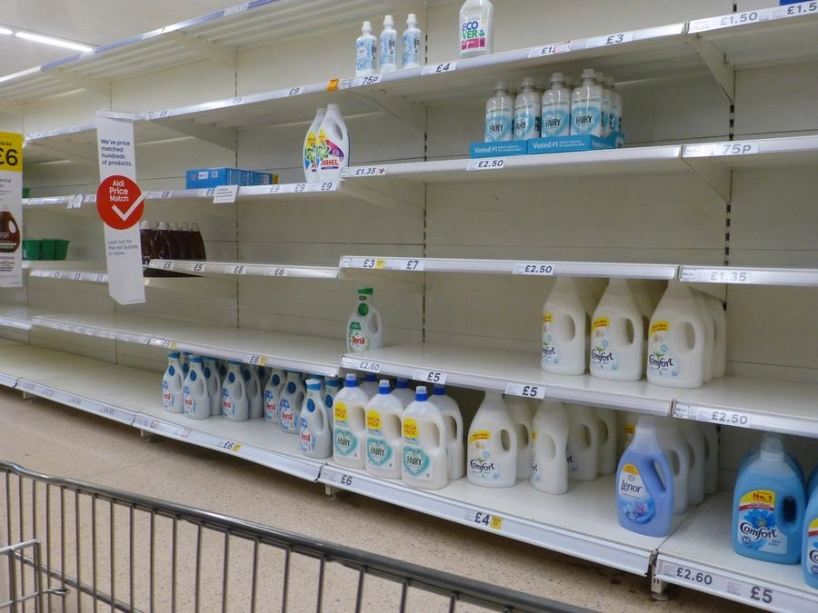

The mind's mechanisms
Your mind runs on shortcuts. Most of the time they help. Some of them cost you money, time and years, and the people selling to you know them better than you do.
High schoolYoung adultsEveryday life
By the end you will be able to...
- Spot the sunk cost trap, and choose by what is ahead instead of what is already spent.
- Notice when you are changing the story to stop a clash, instead of changing what you do.
- Feel the pull of "only today" and "everyone is going", and still take the time to choose.
- Look for what would prove you wrong, not only for what agrees with you.
- Notice when the first number you heard is setting the price, and set your own first.
- Weigh a possible loss and an equal gain on the same scale.
- Tell how often something happens from how easy it is to picture.
- Tell "many people chose it" apart from "it is good".
- Ask whether you would choose what you have if you were choosing today.
- Say a fact the other way round before you decide on it.
- Take a gift without letting it decide what you buy or agree to.
- Trust what someone has shown, not what they wear or what they are called.
- Want a thing for what it is, not for how few seem to be left.
- Remember what you really expected before you knew how it ended.
- Notice when being new at something is making you feel sure of it.
- Plan from how long things really took before, not from how they should go.
- Spot what keeps you pulling a lever that only pays now and then.
- Judge each part of a person or product on its own, not by one bright feature.
Channels for this course


Sunk cost

Why you need this: It stops you throwing good money and years after bad: the car repair, the course, the relationship you stay in only because of what you already put in.
More: why it matters, what else to watch, read and do, who teaches it
Why it matters
Money, time and effort you already spent are gone whichever way you choose. Letting them pick for you means paying again for something already lost.
How this reaches you
The car you keep fixing, the job you stay in because of the years you put in, the course you finish though it stopped helping, the plate you clean though you are full.
Do this week
Pick one thing you keep doing mostly because of what you already put in. Ask: if I were starting fresh today, with nothing spent, would I choose this? Write the answer down.
Who teaches this unit
- Richard Thaler, economist. Described the sunk cost trap in everyday spending in 1980 and won the 2017 Nobel prize for showing how people really decide.
- Hal Arkes, psychologist. With Catherine Blumer in 1985, showed that theatergoers who paid full price for season tickets went to more plays than those given a discount: the money already spent pulled them back.
Cognitive dissonance

Why you need this: When you catch yourself explaining away a bad choice, you can fix it while it is still cheap to fix.
More: why it matters, what else to watch, read and do, who teaches it
Why it matters
When two of your thoughts clash, like "I chose well" and "this is not working", it feels bad. The fastest way to stop the feeling is to change the story. The fact stays where it was.
How this reaches you
Defending a car, a candidate, a partner or a plan long after it stopped working, because admitting it would mean you chose wrong.
Do this week
Find one thing you defend a little too hard. Say out loud: "I chose that, and it is not working." Notice the sting, and notice that nothing bad happened.
Who teaches this unit
- Leon Festinger, psychologist. Named cognitive dissonance in 1957, after studying a group whose prophecy of the end of the world failed and who then believed more strongly, not less.
- Elliot Aronson, psychologist. Showed in 1959 that people who went through a harsh initiation to join a dull group rated the group more highly: the cost made them defend the choice.
Fear of missing out

Why you need this: Countdown timers and "last chance" deals are built to rush you; waiting one day keeps more of your money.
More: why it matters, what else to watch, read and do, who teaches it
Why it matters
A closing door makes anything look more valuable. Sellers and apps close doors on purpose, so you decide before you think.
How this reaches you
"Sale ends tonight", "only 2 left", countdown timers, the group chat everyone is in, scrolling at 2 AM so you don't miss a post.
Do this week
Next time something says "only today", wait one day. Write down whether you still want it, and whether the deal really ended.
Who teaches this unit
- Robert Cialdini, psychologist. Trained as a salesman undercover to study persuasion, and named scarcity, "only a few left", as one of its main levers in Influence (1984).
- Andrew Przybylski, psychologist. Built the first scale to measure fear of missing out in 2013 and found it ties to heavier social media use and lower mood.
Confirmation bias

Why you need this: Knowing you look for proof of what you already believe helps you catch a bad hire, a bad deal or a bad rumor before it costs you.
More: why it matters, what else to watch, read and do, who teaches it
Why it matters
Once you believe something, you look where it will be confirmed and skip where it might not. Each look feels like proof. It is the same room, searched again.
How this reaches you
The feed that only shows what you already like, the friend you ask because you know their answer, the reviews you read only after you bought it.
Do this week
Pick one thing you are sure of. Find the best case against it, written by someone who knows the subject. Read it to the end before you answer it.
Who teaches this unit
- Peter Wason, psychologist. In 1960 asked people to find the rule behind the numbers 2, 4, 6. Most only tested numbers that fit their first guess, and never tried one that could prove it wrong.
- Raymond Nickerson, psychologist. Gathered the evidence for confirmation bias across science, law and medicine in one review (1998) that is still the standard account.
Anchoring

Why you need this: Whoever names the first number in a price, a pay talk or a car deal sets your ruler, so naming your own number first can save you a lot.
More: why it matters, what else to watch, read and do, who teaches it
Why it matters
The first number you hear becomes the ruler you measure everything after it with, even when that number was made up. Sellers say theirs first for a reason.
How this reaches you
Car stickers, "was $90", the first offer in a raise talk, a hospital bill you negotiate down, a home's asking price.
Do this week
Before your next big purchase or pay talk, write down what you think it is worth, from your own research, before you hear their number.
Who teaches this unit
- Daniel Kahneman, psychologist. With Amos Tversky, mapped how judgment fails in predictable ways, from anchoring to loss aversion, and won the 2002 Nobel prize in economics for it.
- Gregory Northcraft and Margaret Neale, management researchers. In 1987 showed that real estate agents valued the same house higher or lower depending on the asking price they were shown, while saying the price had not swayed them.
Loss aversion
Why you need this: Seeing that losses feel twice as big helps you take the good chances you keep passing up and drop the losing ones you keep holding.
More: why it matters, what else to watch, read and do, who teaches it
Why it matters
Losing something hurts about twice as much as gaining the same thing feels good. So people pass up good chances to avoid small risks, and hold on to bad ones to avoid admitting a loss.
How this reaches you
Staying in a job you have outgrown, keeping a stock that keeps falling, buying the extended warranty, "free trial" offers that count on you hating to lose what you already have.
Do this week
Think of one change you keep putting off. Write the best thing that could come of it and the worst. Read them as the same size. Which is bigger now?
Who teaches this unit
- Daniel Kahneman, psychologist. With Amos Tversky, mapped how judgment fails in predictable ways, from anchoring to loss aversion, and won the 2002 Nobel prize in economics for it.
- Amos Tversky, psychologist. With Daniel Kahneman, described the availability shortcut (1973), showed how framing flips choices (1981) and built prospect theory (1979), which measured that losses weigh about twice as much as equal gains.
Availability

Why you need this: You can worry about the risks that actually hurt people you love, like driving or diet, instead of the scary ones in the news.
More: why it matters, what else to watch, read and do, who teaches it
Why it matters
Your mind judges how likely something is by how fast an example comes to mind. Loud, rare, scary things come to mind fast. Quiet, common dangers do not.
How this reaches you
Fearing planes but not cars, buying lottery tickets after a winner is on the news, worrying about strangers while the real risks sit at home: the stairs, the pool, the car.
Do this week
Pick one thing you worry about. Look up how many people it actually hurts in a year, then look up one ordinary thing you do daily. Compare the two numbers.
Who teaches this unit
- Amos Tversky, psychologist. With Daniel Kahneman, described the availability shortcut (1973), showed how framing flips choices (1981) and built prospect theory (1979), which measured that losses weigh about twice as much as equal gains.
- Paul Slovic, psychologist. Spent decades measuring how people judge risk, and showed that dread and vivid images, not the numbers, drive what we fear.
Bandwagon

Why you need this: A crowd can be wrong together; one honest reason of your own keeps you out of fads, bubbles and pile-ons.
More: why it matters, what else to watch, read and do, who teaches it
Why it matters
A crowd is a quick signal, and sometimes a good one. But a line can form just because there was already a line. Then nobody in it actually checked.
How this reaches you
The stock everyone is buying at the top, the viral product, the opinion your whole group switched to in a week, five-star counts bought in bulk.
Do this week
Next time you are drawn to something because it is popular, find one reason to want it that would still be true if nobody else wanted it.
Who teaches this unit
- Solomon Asch, psychologist. In the 1950s had people match line lengths beside actors giving a wrong answer. About a third of the time, people went along with the group against their own eyes.
- Robert Shiller, economist. Warned of the dot-com and housing bubbles before they burst by showing how prices feed on the crowd's own excitement, and won the 2013 Nobel prize in economics.
Status quo bias

Why you need this: Old phone plans, insurance and subscriptions quietly cost more each year; ten minutes of checking can pay back every month after.
More: why it matters, what else to watch, read and do, who teaches it
Why it matters
Whatever you already have feels safe, even when it costs more. Changing takes a small effort now; staying costs a little every month, quietly, forever.
How this reaches you
Phone and internet plans, insurance, bank fees, the subscription you forgot, the default settings on every app, the retirement plan you never set up.
Do this week
Pick one bill you have paid the same way for over a year. Spend ten minutes looking at what else is out there. Make the call if it is better.
Who teaches this unit
- William Samuelson and Richard Zeckhauser, economists. Named status quo bias in 1988, showing in experiments and real choices of health plans that people stick with whatever option is already theirs.
- Brigitte Madrian, economist. With Dennis Shea (2001), showed that when one company made retirement savings the default, joining went from about a third of new workers to most of them.
Framing

Why you need this: Labels like "90% fat free" or "only $1 a day" are chosen to steer you; flipping them shows you the real choice.
More: why it matters, what else to watch, read and do, who teaches it
Why it matters
The same fact can be wrapped as a gain or a loss, a "free" or a "fee", and your choice follows the wrapper. Whoever writes the label picks the wrapper.
How this reaches you
"90% fat free", "only $1 a day", "95% success rate", "a 5% chance of failure", "tax relief", "death tax": the same numbers or the same law, sold or scared by the words.
Do this week
Find one label, ad or headline this week and rewrite it the other way round ("90% fat free" to "10% fat"). Notice whether it still sells.
Who teaches this unit
- Amos Tversky, psychologist. With Daniel Kahneman, described the availability shortcut (1973), showed how framing flips choices (1981) and built prospect theory (1979), which measured that losses weigh about twice as much as equal gains.
- Barbara McNeil, physician and researcher. In 1982 showed that doctors and patients chose surgery far more often when its risks were given as the chance of surviving than as the chance of dying, with the same numbers.
Reciprocity

Why you need this: Free samples and small favors from sellers make you feel you owe them; knowing the pull lets you say thanks without buying.
More: why it matters, what else to watch, read and do, who teaches it
Why it matters
When someone gives you something, you feel you owe them. That feeling holds families and friendships together, and sellers use it on purpose with gifts that cost them little.
How this reaches you
Free samples, free trials, the free pen and calendar from a charity before the ask, the "free" dinner at a timeshare talk, the favor before the favor.
Do this week
Next time you get something free from someone selling, say thank you and decide as if you had not got it. Notice the pull while you do.
Who teaches this unit
- Dennis Regan, psychologist. In 1971 had a stranger give people a free soda, then ask them to buy raffle tickets. They bought about twice as many as people given nothing, liked or not.
- Robert Cialdini, psychologist. Trained as a salesman undercover to study persuasion, and named scarcity, "only a few left", as one of its main levers in Influence (1984).
Authority

Why you need this: Uniforms, titles and confident voices are easy to fake, and checking one real thing protects you from bad advice and con artists.
More: why it matters, what else to watch, read and do, who teaches it
Why it matters
Following real experts saves time. But the signs of expertise, a coat, a title, a confident voice, are easy to wear, and people obey the signs even when the order is wrong.
How this reaches you
Actors in white coats in ads, "doctor recommended", the caller who says they are from your bank or the IRS, a confident guest on TV speaking outside their field.
Do this week
Next time someone is introduced as an expert, look up one thing they actually did in that field. If you cannot find one, treat the claim like anyone else's.
Who teaches this unit
- Stanley Milgram, psychologist. In 1963 showed that about two in three ordinary people kept giving what they believed were dangerous shocks when a calm man in a lab coat told them to go on.
- Charles Hofling, psychiatrist. In 1966 had an unknown "doctor" phone hospital nurses to give twice the maximum dose of a drug. 21 of 22 nurses were stopped on the way to give it.
Scarcity

Why you need this: "Only 2 left" is often just a line of text; checking again tomorrow saves you from paying for panic.
More: why it matters, what else to watch, read and do, who teaches it
Why it matters
Things that seem rare feel more valuable, even when they are exactly the same. A seller can make anything seem rare with one line of text.
How this reaches you
"Only 2 left in stock", "3 people are looking at this", limited drops, last seats at this price, the countdown on a checkout page.
Do this week
Next time a page says "only a few left", screenshot it and check again tomorrow. Note whether the number really changed.
Who teaches this unit
- Stephen Worchel, psychologist. In 1975 offered people the same cookie from a jar of ten or a jar of two. The cookie from the nearly empty jar was rated more desirable.
- Robert Cialdini, psychologist. Trained as a salesman undercover to study persuasion, and named scarcity, "only a few left", as one of its main levers in Influence (1984).
Hindsight bias

Why you need this: When "I knew it all along" is caught, you learn honestly from your own past choices instead of blaming yourself or others for what nobody could see.
More: why it matters, what else to watch, read and do, who teaches it
Why it matters
Once you know how something turned out, your memory quietly rewrites what you expected, so the past looks obvious. Then the future looks easier to call than it is.
How this reaches you
"I knew that stock would crash", "I always said they would break up", blaming someone for missing what only looks obvious now, betting big on the next call.
Do this week
Before the next game, election or big decision, write down what you expect and how sure you are. Read it after the result.
Who teaches this unit
- Baruch Fischhoff, psychologist. In 1975 showed that people told how a historical event turned out believed they would have predicted it, and could not undo the knowledge when asked to.
- Daniel Kahneman, psychologist. With Amos Tversky, mapped how judgment fails in predictable ways, from anchoring to loss aversion, and won the 2002 Nobel prize in economics for it.
Dunning-Kruger: knowing a little

Why you need this: Feeling sure after a little learning is normal; asking someone with years in it before a big decision saves costly beginner mistakes.
More: why it matters, what else to watch, read and do, who teaches it
Why it matters
When you are new at something, you cannot yet see what you are missing, so it feels easy. As skill grows, so does the view of what is left to learn. Researchers argue about how big this effect is, but the pattern shows up often.
How this reaches you
The new driver who speeds, the person who read one article and argues with doctors, the first-week trader, the new boss who changes everything on day one.
Do this week
Pick one thing you feel sure about but learned recently. Find someone with years in it and ask them what beginners usually get wrong.
Who teaches this unit
- David Dunning and Justin Kruger, psychologists. In 1999 found that people who scored lowest on tests of logic and grammar rated themselves well above average: the skill to do it is the skill to judge it.
- Ola Svenson, psychologist. In 1981 asked drivers to rate their own skill. Most American drivers in the study put themselves in the safest, most skilled half.
Planning fallacy

Why you need this: Moves, repairs and school projects almost always take longer and cost more than planned; padding your plan keeps your promises and your budget.
More: why it matters, what else to watch, read and do, who teaches it
Why it matters
When you plan, you picture the job going right. You do not picture the missing tape, the wrong part, the second coat. So almost every plan comes out too short and too cheap.
How this reaches you
The repair that takes all weekend, the budget that runs out in week three, the move, the wedding, the road project that is years late and millions over.
Do this week
Before your next project, find a time you did something like it. Use how long that really took as your estimate, then add a little.
Who teaches this unit
- Roger Buehler, psychologist. In 1994, with Dale Griffin and Michael Ross, asked students when they would finish their theses. They guessed about 34 days; it took about 56.
- Bent Flyvbjerg, planning scholar. Studied thousands of big building projects and found that about nine in ten run over budget, over time, or both.
Variable reward

Why you need this: Phones, games and slot machines pay out at random to keep you pulling; seeing it gives you back hours of your day.
Sit down at the machine and pull. Stay as long as it feels worth it, then walk away. Then try a machine that pays a different way, and compare what your own hand did.
More: why it matters, what else to watch, read and do, who teaches it
Why it matters
A reward that comes every time gets boring. A reward that comes at random keeps you pulling, because the next one might be the one. Slot machines are built on this, and so are many apps.
How this reaches you
Pull-to-refresh, the feed you scroll past midnight, checking for likes, loot boxes in games, scratch-off tickets, refreshing your email.
Do this week
Turn off the notifications for one app for a week. Notice how often your hand reaches for it anyway.
Who teaches this unit
- B. F. Skinner, psychologist. Showed with animals that rewards given at random keep behavior going far longer than rewards given every time.
- Natasha Dow Schüll, anthropologist. Spent years in Las Vegas studying how slot machines are designed to keep people playing, in Addiction by Design (2012).
Halo effect

Why you need this: A nice smile or a famous face can sell you a bad product or a dishonest person; checking one fact protects your trust and your money.
More: why it matters, what else to watch, read and do, who teaches it
Why it matters
One good trait, like looks, fame or a confident voice, glows over everything else. You end up trusting someone's honesty, skill or price because of their smile.
How this reaches you
Celebrity ads, attractive people getting lighter sentences and better jobs, a slick website you trust with your card, a brand you like making a product you never checked.
Do this week
Next time you like someone or something right away, list three things you are assuming about it. Check one.
Who teaches this unit
- Edward Thorndike, psychologist. Named the halo effect in 1920, after finding that army officers who rated a soldier well on looks also rated him well on intelligence and loyalty.
- Richard Nisbett and Timothy Wilson, psychologists. In 1977 showed students the same lecturer acting warm or cold. Warm, his looks and accent were rated appealing; cold, irritating. The students denied his manner swayed them.